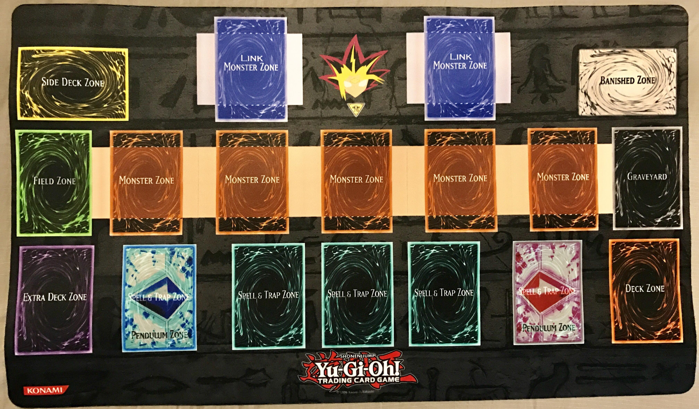

| description | Fusion Summon | Synchro Summon | Xyz Summon | Pendulum Summon | Link Summon |
|---|
The Yu-Gi-Oh! Trading Card Game, known as the Yu-Gi-Oh! Official Card Game (遊☆戯☆王オフィシャルカードゲーム, Yū-Gi-Ō Ofisharu Kādo Gēmu) in Asia, is a Japanese collectible card game developed and published by Konami. It is based on the fictional game of Duel Monsters created by manga artist Kazuki Takahashi, which is the main plot device during the majority of the manga franchise, Yu-Gi-Oh!, and its various anime adaptations and spinoff series
The trading card game was launched by Konami in 1999 in Japan and March 2002 in North America.It was named the top selling trading card game in the world by Guinness World Records on July 7, 2009, having sold over 22 billion cards worldwide.As of March 31, 2011, Konami Digital Entertainment Co., Ltd. Japan sold 25.2 billion cards globally since 1999.
In the trading card game, players draw cards from their respective decks and take turns playing cards onto "the field." Each player uses a deck containing forty to sixty cards, and an optional "Extra Deck" of up to fifteen cards. There is also an optional fifteen card side deck, which allows players to swap cards from their main deck and/or extra deck between games. Players are restricted to three of each card per deck and must follow the Forbidden/Limited card list, which restricts selected cards by Konami to be limited to two, one, or zero. Each player starts with 8,000 "Life Points", with the main aim of the game to use monster attacks and spells to reduce the opponent's Life Points. The game ends upon reaching one of the following conditions:
Gameplay revolves around three types of cards; Monster, Spell, and Trap. Monster cards are summoned by each player to attack the opposing player's monsters or life points or defend against their attacks. With some exceptions, each monster typically possesses ATK and DEF points, which are used to determine the results of battles, Levels, with more powerful monsters requiring tributes or special summoning techniques to summon, and Types and Attributes, which determine how they are affected by other cards. Normal and Effect monsters are stored in the Main Deck and are either Normal Summoned once per turn, Tribute Summoned by tributing existing monsters on the field, or Special Summoned by certain card effects. Ritual Monsters are stored in the Deck and summoned using a corresponding Ritual Spell card. Four other types of monster, Fusion, Synchro, Xyz, and Link, are stored in the Extra Deck and each require unique methods to be Special Summoned to the field. Fusion Monsters require a fusion effect to merge monsters, and, with some exceptions, require a Fusion Spell card, the most commonly used being Polymerization. Synchro Monsters are summoned by combining the levels of a Tuner-type monster with other non-Tuner monsters. Xyz Monsters, which possess Ranks instead of levels, are summoned by stacking monsters with the same level, which can then be used as Xyz material to be used for certain effects. Link Monsters, which possess a Link rating instead of a Level and do not possess DEF points, are summoned using multiple monsters and possess Link Markers that affect spaces on the field that they point to. Monsters marked with a green gradient are Pendulum monsters which can be placed in Pendulum Zones and used for Special Summoning multiple monsters at once. Token monsters, represented by either official cards or makeshift counters, are summoned through effects for defense or tributing purposes and cannot exist outside the field.
Spell cards are magical spells with a variety of effects, such as raising ATK points or reviving destroyed monsters. They come in six varieties; Normal, Quick Play, Continuous, Equip, Ritual, and Field. Trap cards are placed on the field face-down in advance and activated in response to certain criteria, such as an opponent's attack. These come in three varieties; Normal, Continuous, and Counter.An additional card type, Skill, is used exclusively in the Speed Duel gameplay format.
Cards are laid out in the following manner:
